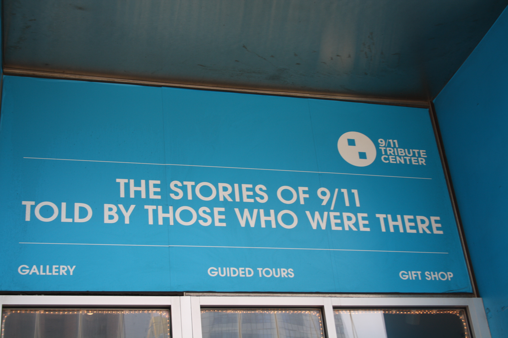
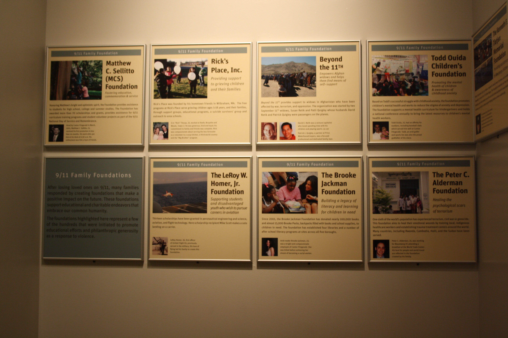
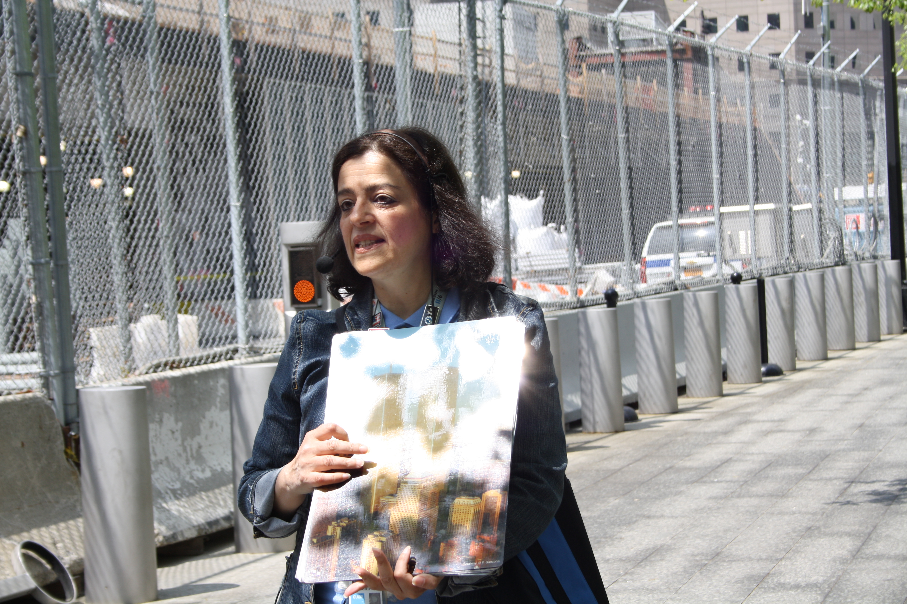

Manhattan/ 9/11 Memorial Museum and Tribute Center
The National September 11 Memorial is a tribute of remembrance and honor to the nearly 3,000 people killed in the terror attacks of September 11, 2001 at the World Trade Center site, near Shanksville, Pa., and at the Pentagon, as well as the six people killed in the World Trade Center bombing in February 1993.The Memorial’s twin reflecting pools are each nearly an acre in size and feature the largest manmade waterfalls in the North America. The pools sit within the footprints where the Twin Towers once stood. Architect Michael Arad and landscape architect Peter Walker created the Memorial design selected from a global design competition that included more than 5,200 entries from 63 nations.
The names of every person who died in the 2001 and 1993 attacks are inscribed into bronze panels edging the Memorial pools, a powerful reminder of the largest loss of life resulting from a foreign attack on American soil and the greatest single loss of rescue personnel in American history.

 |
 |
 |
 |  |
The National September 11 Memorial Museum serves as the country’s principal institution for examining the implications of the events of 9/11, documenting the impact of those events and exploring the continuing significance of September 11, 2001.
The Museum’s 110,000 square feet of exhibition space is located within the archaeological heart of the World Trade Center site—telling the story of 9/11 through multimedia displays, archives, narratives and a collection of monumental and authentic artifacts. The lives of every victim of the 2001 and 1993 attacks will be commemorated as visitors have the opportunity to learn about the men, women, and children who died.
The monumental artifacts of the Museum provide a link to the events of 9/11, while presenting intimate stories of loss, compassion, reckoning, and recovery that are central to telling the story of the attacks and the aftermath.